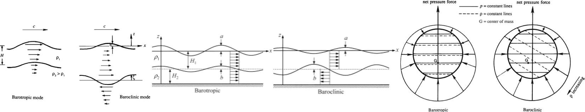

The propagation of internal waves is a baroclinic process, in which the surfaces of constant pressure do not coincide with the surfaces of constant density  To reveal the structure of the situation described by \(\boxed{\frac{\partial^2}{\partial t^2} \left( \frac{\partial^2 w}{\partial z^2} \right) = -\nabla_H^2 \left( \frac{\partial^2 w}{\partial t^2} + N^2 w \right) \text{ or } \frac{\partial^2}{\partial t^2} \left( \nabla^2 w \right) + N^2 \nabla_H^2 w = 0}\) and \(\boxed{\omega = \omega(k, l, m) = \omega(\mathbf{K})}\), consider the complex version of \(\eta = a \cos\left( kx + ly + mz - \omega t \right) = a \cos\left( \mathbf{K} \cdot \mathbf{x} - \omega t \right)\) with wave number vector \(\mathbf{K} = (k, l, m)\) for the vertical velocity in a fluid medium having a constant buoyancy frequency \[ w = w_0 e^{i(kx + ly + mz - \omega t)} = w_0 e^{i(\mathbf{K} \cdot \mathbf{x} - \omega t)} \] Substituting it into \(\boxed{\frac{\partial^2}{\partial t^2} \left( \frac{\partial^2 w}{\partial z^2} \right) = -\nabla_H^2 \left( \frac{\partial^2 w}{\partial t^2} + N^2 w \right) \text{ or } \frac{\partial^2}{\partial t^2} \left( \nabla^2 w \right) + N^2 \nabla_H^2 w = 0}\) with constant \(N\) leads to the dispersion relation \[ \omega^2 = \frac{k^2 + l^2}{k^2 + l^2 + m^2} N^2 \]